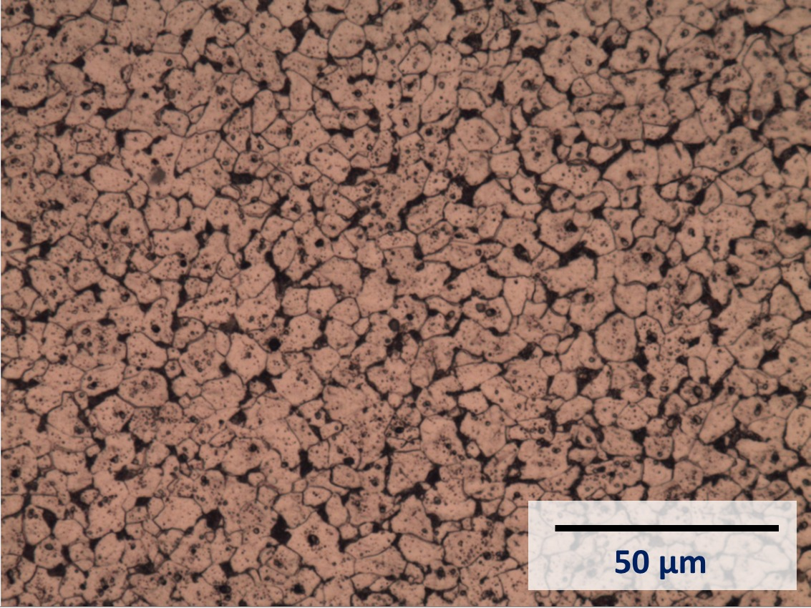

To estimate, the volume fraction of pearlite (black phase), a method of thresholding is used. The image has grey scale 0 (white) to 255 (black).Here I have used 4 different thresholds and have calculated the corresponding fraction of pearlite phase. Please chose which one is correct?

Click left for previous image and click on right for next image . for select click on image

Threshold pixel: 60
Fraction: 11.0%

Threshold pixel: 80
Fraction: 18.6%

Threshold pixel: 100
Fraction: 28.5%
Threshold pixel: 120
Fraction: 45.7%